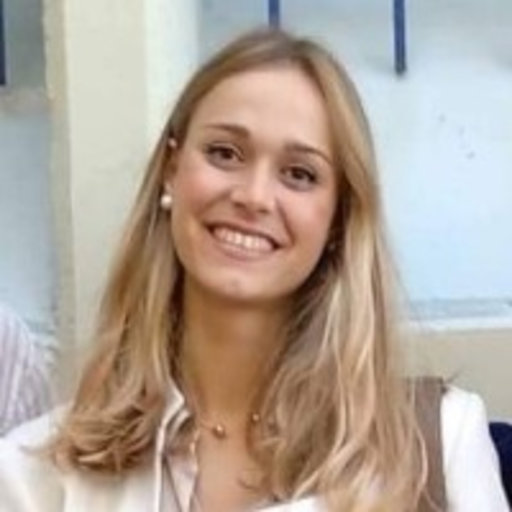

Schedule
Research of Women in Our Department: Keynote and Panel
17:00-19:00 GMT on Tuesday, March 8th, 2022
To celebrate the achievements of women* in our department, we are hosting a keynote talk from our Professor Maria Petrou PhD Scholarship winner for 2021 and a series of brief presentations from students in our department, followed by an interactive panel session.
This will be in hybrid format - EEE 611 and a link will be sent to those who register below.
Women in STEM: Roundtable Discussion
11:00-13:00 GMT on Wednesday, March 9th, 2022
To facilitate a conversation on the topic of Women in STEM, the IEEE Student Branch is hosting a roundtable discussion with audience participation.
This will be in hybrid format - TBD (booking not confirmed) and a link will be sent to those who register below.
Register for both events here!
Event 1
Research of Women in Our Department: Keynote and Panel
17:00-19:00 on March 8th, 2022
Professor Maria Petrou PhD Scholarship
The Professor Maria Petrou PhD Scholarship has been established to help recruit, retain and advance the careers of all women, including cis and trans women in engineering. It provids funds for undertaking PhD studies in the Department of Electrical and Electronic Engineering at Imperial College London.
For the first event, the keynote presentation is given by the receipient of this scholarship:

Asimina Mertzani
Scholarship Winner for 2021
Asimina graduated from the National Technical University of Athens with top marks in 2019. She has gone on to her Masters in Applied Machine Learning at Imperial College London to work on "Distribution of Knowledge and Divergence of Expertise in Social Networks". She now continues this research under the supervision of Professor Jeremy Pitt.
Panel for Research of Women in Our Department
The first event focuses on recognising achievements of women in our department and those that support them.
Each panelist will first present their own technical work, the work of another woman in the department, and/or their personal stories. This is followed by a live Q&A from the host and audience. Here are our panelists in alphabetical order.

Dafni Antotsiou
Ph.D. Student in Intelligent Systems and Networks within EEE
After working in industry R&D, Dafni joined our department to study machine learning and computer vision. Her main research topic is imitation learning in human-centric environments that involve object manipulation. She has many experiences with outreach to girls and other women in STEM. During these talks and mentorship sessions, she helps them overcome the intimidating environment that surrounds women in programming.

Al-Amin Bashir Bugaje
Ph.D. Student in Control and Power group within EEE
As head representative for Ph.D. students in EEE, Al-Amin is an ally to women and minority groups seeking equality. In this panel, he hopes to present a united front with his fellow female panelists and demonstrate how others like him are postively impacted by the presence of women in our department.
Kate Highnam (Host)
Ph.D. Student in Intelligent Systems and Networks within EEE
Kate is a Ph.D. Student under the joint supervision of Professor Nicholas R. Jennings CB, FREng, and Dr. Sergio Maffeis. Her professional experience in machine learning and cyber security motivates her current research into domain adaptation in intrusion detection with real world applications. She is also an Enrichment student with The Alan Turing Institute in London.
Christy See-wai Chan
Undergraduate Student in EEE
TBD
Priya Chhaya
Undergraduate Student in EEE
TBD
Event 2
Women in STEM: Roundtable Discussion
11:00-13:00 on March 9th, 2022
Women in STEM: Roundtable Discussion
The aim of the second event is to facilitate a conversation on the current role and future perspectives for Women in STEM. We hope to achieve that via a roundtable discussion with four guest speakers from diverse fields and unique professional experiences. The panel will last up to 90 minutes and will be followed by a cocktail reception and a chance to interact with the speakers.
We invite you to participate in this event, share your personal experiences and thoughts on the topic, and join in the discussion with our four panellists:
Dr. Jelena Ponocko
Lecturer in Distance Learning at the University of Manchester
Recently appointed the IEEE Power and Energy Society's (PES) Women in Power (WIP) representative for the UK and Ireland, Dr. Ponocko is an incredible example of women in EEE. She currently holds an impressive career, with her most popular work titled "Forecasting demand flexibility of aggregated residential load using smart meter data" from 2018.

Alicia Blatiak
Ph.D. Candidate in EEE
My background is in renewable energy (solar and offshore wind). I then taught Physics before starting my PhD at the EPSRC Centre for Doctoral Training in Future Power Networks and Smart Grids. My PhD topic focuses on flexibility from electric vehicles.
Dr. Aizaan Anwar
Ph.D. Student in Intelligent Systems and Networks within EEE
I am Prof. Lucia Specia and Dr. Matthew Williams’ AI4Health PhD student, currently studying longitudinal speech data collected from the BRIAN mobile app (developed by The Brain Tumour Charity) as biomarkers of brain tumour progression. I studied medicine at the University of Aberdeen and was attached to the Brain and Mind Institute, University of Western Ontario, for my medical elective. My elective project on the ability of the visuomotor system in predicting object weight through trial history was supervised by Dr. Gavin Buckingham and Prof. Melvyn Goodale. After qualifying, I worked in the NHS where I spent nearly three years combined in clinical neurosciences (National Hospital for Neurology & Neurosurgery London, Sheffield and Aberdeen).
*On this day, we choose to celebrate the achievements of all who identify as a woman and non-binary.
Organisers
The IEEE Student Branch
@ Imperial College London
EEE Postgraduate Students
Electrical & Electronic Engineering
@ Imperial College London
The Ph.D. Representatives for EEE
Electrical & Electronic Engineering
@ Imperial College London